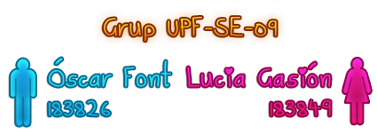

Benvinguts!
Hem creat aquesta plataforma HTML i CSS amb el fi de compartir els nostres treballs de l'assignatura Enginyeria de Software amb el professorat i la resta de companys.
Els idiomes que utilitzarem seran el català i l'anglès, en funció de l'idioma que s'empri a l'hora de demanar-nos la feina.
"Software is a gas: it always expands to
fit whatever container it is stored in."
—Nathan Myhrvold
fit whatever container it is stored in."
—Nathan Myhrvold